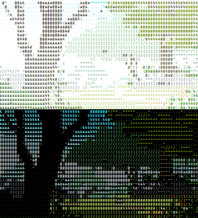

"Trying to understand the way nature works involves a most terrible test of human reasoning ability. It involves subtle trickery, beautiful tightropes of logic on which one has to walk in order not to make a mistake in predicting what will happen. The quantum mechanical and the relativity ideas are examples of this." -- Richard P. Feynman

=======
---
layout: default
---
You are standing at the entrance to the woods.
"Trying to understand the way nature works involves a most terrible test of human reasoning ability. It involves subtle trickery, beautiful tightropes of logic on which one has to walk in order not to make a mistake in predicting what will happen. The quantum mechanical and the relativity ideas are examples of this." -- Richard P. Feynman